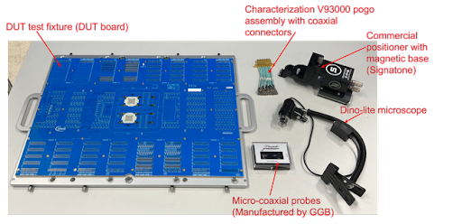
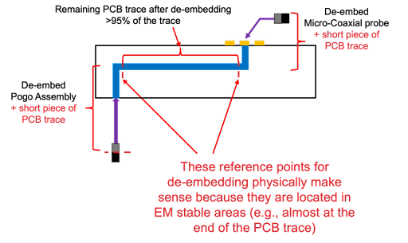

This article summarizes the content of a paper jointly developed and presented by Advantest and Infineon at TestConX 2022.
By Zhenhua Chen, Senior Application Engineer, Advantest Europe
Device under test (DUT) fixtures for ATE system pose several verification challenges. Users need to measure the DUT test fixture quickly and easily, while making sure the measurements mimic the ATE-to-test-fixture interface performance and determining how to handle DUT ball grid array (BGA)/socket measurement. These challenges are further highlighted by the unique issues faced individually by probing on the ATE side and on the DUT side of the test fixture.
Usually on the ATE side there are only two types of interconnect: coaxial connectors, which can be easily probed using the appropriate cable assembly; and spring pin vias, which are more complicated to probe. A spring pin cable assembly with a coaxial connector or a probe/adapter can be used. On the DUT side, the BGA ballout of the device (pitch/pin-out) presents the first challenge to probing at the socket. The second challenge is that including the socket in the measurement requires compressing the spring pins, elastomer, etc. in the socket. This can be achieved with a properly designed interposer.
The traditional approach to addressing these issues is to utilize a generic commercial probe station, with a pogo via adapter on the top side of the load board and BGA pad on the bottom side. These stations are very large and costly, and using them requires prior experience and expertise. On the other hand, to “MacGyver” a solution, the user would need to obtain an ATE test fixture mechanical interface and assemble it for manual use, then modify a standard spring pin ATE cable assembly by cutting off the unified pin connector and attaching individual coaxial SMA connectors. This so-called solution, while less cumbersome than a commercial probe station, is not practical for quick and easy implementation, as it is time- and labor-intensive and difficult to replicate.
Custom probing kit to the rescue
Advantest has developed a cost-effective solution to these challenges: our custom probing kit for V93000 DUT test fixtures that can be easily assembled and implemented as a desktop ATE test fixture. Figure 1a shows what the user receives in the kit, while Figure 1b shows additional parts needed and illustrates how the DUT board is positioned on the bracket. Figure 2 shows an example of a completed, installed assembly.
Figure 1. Advantest’s custom probing kit includes everything needed to build a cost-effective desktop V93000 ATE test fixture. [Board image courtesy of Infineon]
Figure 2. Advantest’s probing kit can be quickly and easily assembled and installed on the user’s desktop, as shown in this example, with cables that can connect to any instrument necessary. [Board image courtesy of Infineon]
Addressing the de-embedding challenge
The IEEE 370-2020 standard incorporates parameters for measuring DUT performance, recognizing the critical importance of the test fixture in this capacity. This includes de-embedding, which the standard defines as “the process of removing fixture effects from the measured S-parameters [scattering parameters].” ATE test fixture de-embedding is not trivial; the measurement reference location is critical for de-embedding to be successful. The de-embedding reference point needs to be a location with stable electromagnetic (EM) fields. The de-embedding software will always de-embed whatever data is provided, but this doesn’t automatically mean that the de-embedding is physically correct.
Several de-embedding technique options are available. For ATE PCB test fixtures, we suggest the 2X-Thru approach, which requires a de-embedding test structure and is supported by the 370-2020 IEEE standard. The 1X-Reflect approach requires a short or/and open, and is not supported by the 370-2020 IEEE standard. Figure 3 provides an example of successful de-embedding.
Figure 3. This de-embedding example utilized the 2X-Thru approach.
As Infineon product engineer Manfred Brueckl noted, “De-embedding ATE test fixtures is a challenge that has typically required cumbersome or costly solutions. With this probing kit, Advantest has created a much-needed way to address this challenge that is both space-saving and cost-effective.”
Conclusion
Measuring the ATE PCB test fixture is a critical step that can save the test engineer a great deal of time later during initial application turn-on. This is especially critical for applications where test fixture S-parameters are required for the de-embedding process. Different probing approaches are possible to address this challenge, but because of the specific mechanical design associated with an ATE platform, using a customized probing setup provides the best cost/capability trade-off. Advantest has developed this setup in a kit that is easily assembled and implemented to accommodate a user’s specific requirements.
References
Books
- Jose Moreira and Hubert Werkmann, “Automated Testing of High-Speed Interfaces,” 2nd Edition, Artech House 2016.
- Luc Martens, “High-Frequency Characterization of Electronic Packaging,” Kluwer Academic Publishers 1998.
- Scott A. Wartenberg, “RF Measurements of Die and Packages,” Artech House 2002.
Papers on Socket Probing
- Heidi Barnes et al., “Performance at the DUT: Techniques for Evaluating the Performance of an ATE System at the Device Under Test Socket,” DesignCon 2008
- Heidi Barnes et al., “Advances in ATE Fixture Performance and Socket Characterization for Multi-Gigabit Applications,“ DesignCon 2012.
- Jose Moreira, “Design of a High Bandwidth Interposer for Performance Evaluation of ATE Test Fixtures at the DUT Socket,” ATS 2012.
Papers on De-embedding
- Jose Moreira et al.,“DUT ATE Test Fixture S-Parameters Estimation using 1x-Reflect Methodology,” BITS China 2017.
- Heidi Barnes et al.,“Verifying the Accuracy of 2x-Thru De-Embedding for Unsymmetrical Test Fixtures,” EPEPS 2017.
- Heidi Barnes et al., “S-Parameter Measurement and Fixture De-Embedding Variation Across Multiple Teams, Equipment and De-Embedding Tools,” DesignCon 2019.
- Xiaoning Ye et al.,“Introduction to the IEEE P370 Standard and its Applications for High-Speed Interconnect Characterization,” DesignCon 2020.


